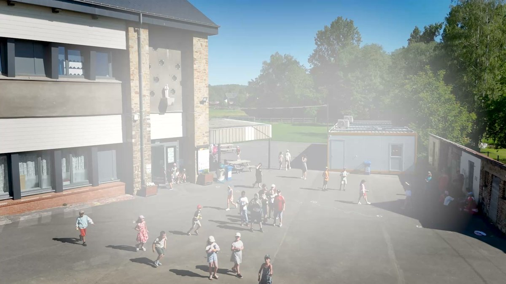
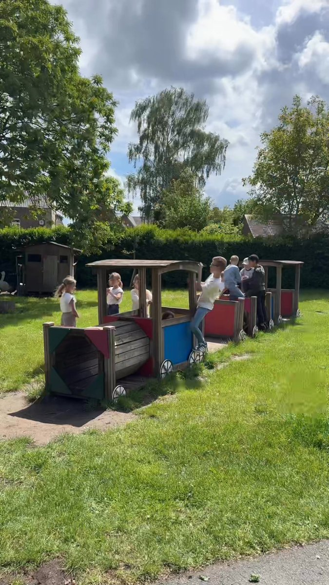
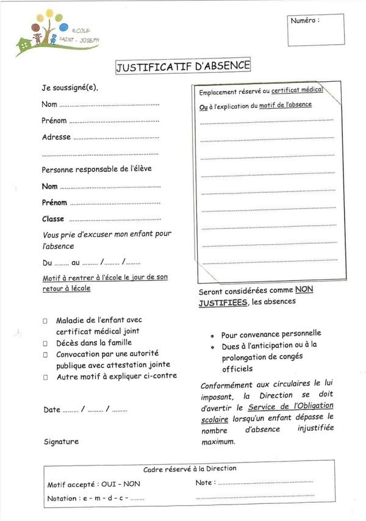
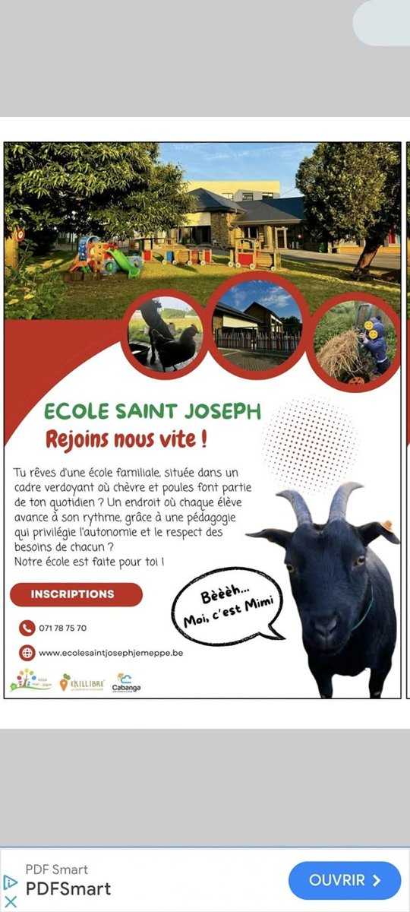

Venez découvrir notre école
Découvrez en vidéo le cadre et l’ambiance familiale de notre école. Les familles sont accueillies sur rendez-vous pour une visite et une inscription.
Voir la publication (nouvel onglet)Le journal de l’école
Projets pédagogiques, découvertes, événements et informations pour les familles : retrouvez la vie de Saint-Joseph au fil des saisons.

Découvrez en vidéo le cadre et l’ambiance familiale de notre école. Les familles sont accueillies sur rendez-vous pour une visite et une inscription.
Voir la publication (nouvel onglet)Retour en images sur l’ambiance de la Fancy Fair et la participation des familles à cette journée festive.
Voir la publication (nouvel onglet)La Fancy Fair réunit les enfants, les familles et l’équipe éducative pour un rendez-vous festif à l’école.
Voir la publication (nouvel onglet)
Une invitation en vidéo à réserver la date de la Fancy Fair et à partager ce moment avec les familles.
Voir la publication (nouvel onglet)Les élèves de P6 créent leur propre livre et découvrent une technique artistique originale, avec une exposition au musée.
Voir la publication (nouvel onglet)Les informations communiquées aux familles pour rejoindre l’école pendant les travaux. Pour connaître l’accès actuel, contactez la direction.
Voir la publication (nouvel onglet)Semis, plantations et découvertes au jardin : les maternelles observent le réveil de la nature au printemps.
Voir la publication (nouvel onglet)Au retour du soleil, les élèves profitent des récréations sur la pelouse et des moments de jeu à l’air libre.
Voir la publication (nouvel onglet)Le Festival du Livre s’installe à l’école pour des découvertes et des animations autour de la lecture.
Voir la publication (nouvel onglet)Les élèves rencontrent les aînés autour d’un projet de partage, de souvenirs et de transmission.
Voir la publication (nouvel onglet)
Un rappel pour les familles sur les démarches à suivre pour justifier les absences. Le justificatif est disponible dans les documents de l’école.
Voir la publication (nouvel onglet)Danse, graff et estime de soi : les P5 participent au projet artistique Mosaïque.
Voir la publication (nouvel onglet)Quelques vues de notre établissement pour découvrir les lieux et le cadre de vie des élèves.
Voir la publication (nouvel onglet)Une occasion de visiter l’école, de rencontrer l’équipe et de se renseigner sur les pré-inscriptions.
Voir la publication (nouvel onglet)Les élèves et les enseignants se retrouvent pour célébrer la Saint-Joseph lors d’une journée conviviale.
Voir la publication (nouvel onglet)
Une invitation de 2024 à rencontrer l’équipe et à découvrir l’école.
Voir la publication (nouvel onglet)Une publication d’archive sur la reprise des inscriptions et les visites de l’école.
Voir la publication (nouvel onglet)
Les élèves participent à une journée en pyjama pour soutenir l’ASBL Class Contact. Merci à tous pour leur engagement !
Voir la publication (nouvel onglet)
Un projet consacré au climat scolaire, aux zones de récréation et au soutien des parents pour mieux vivre ensemble dans la cour.
Voir la publication (nouvel onglet)
En octobre 2020, l’école accueillait deux nouvelles chèvres, Mimi et Poppy, pour embellir les abords de l’école.
Voir la publication (nouvel onglet)Toutes les nouvelles de l’école sur Facebook (nouvel onglet)